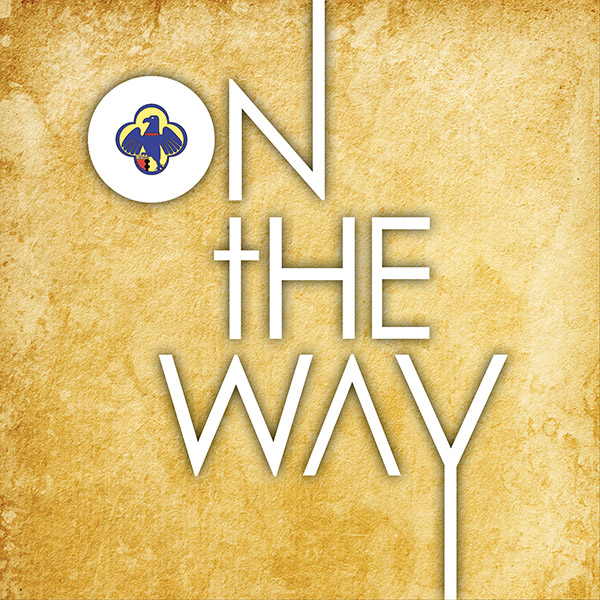
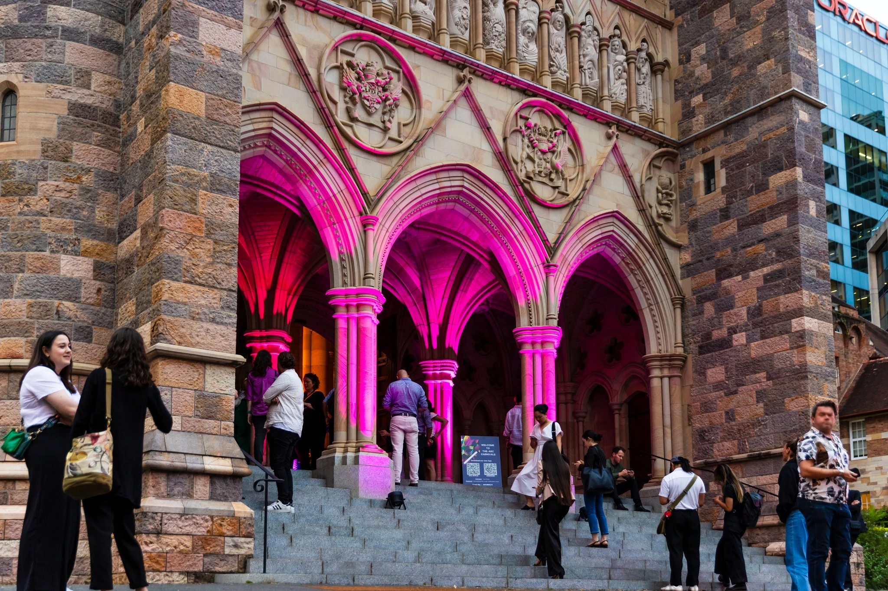
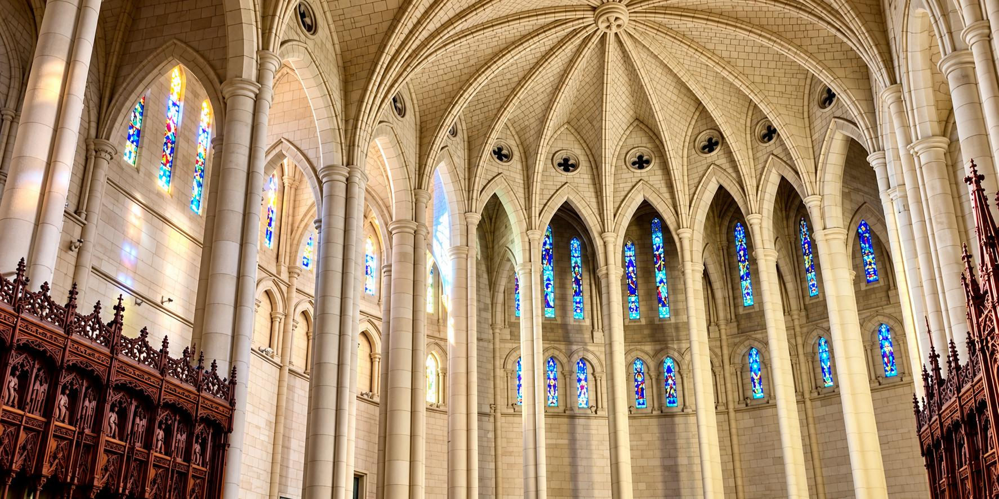
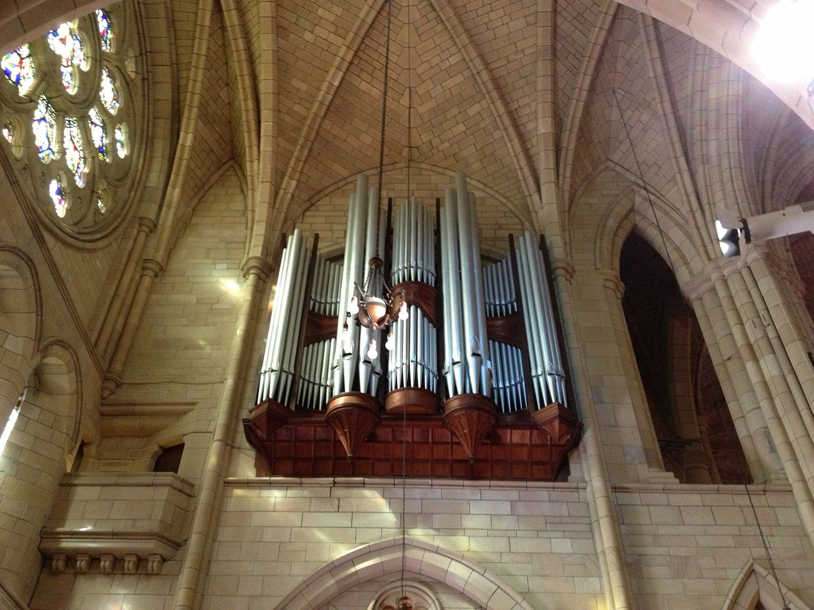
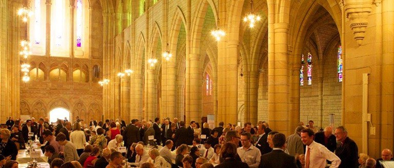
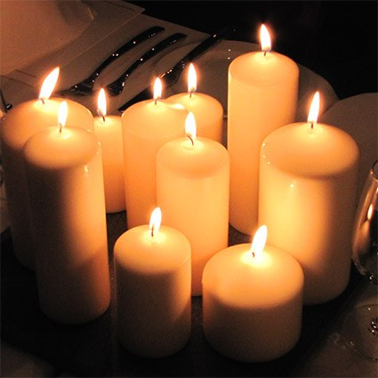
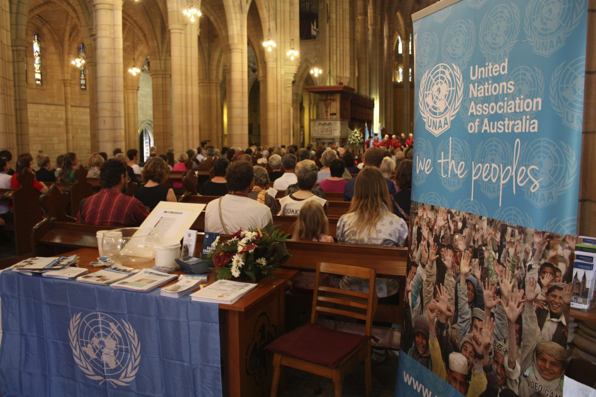
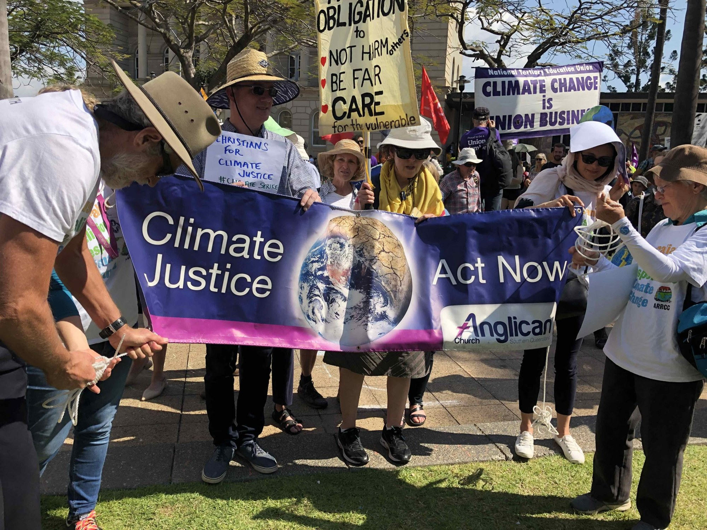
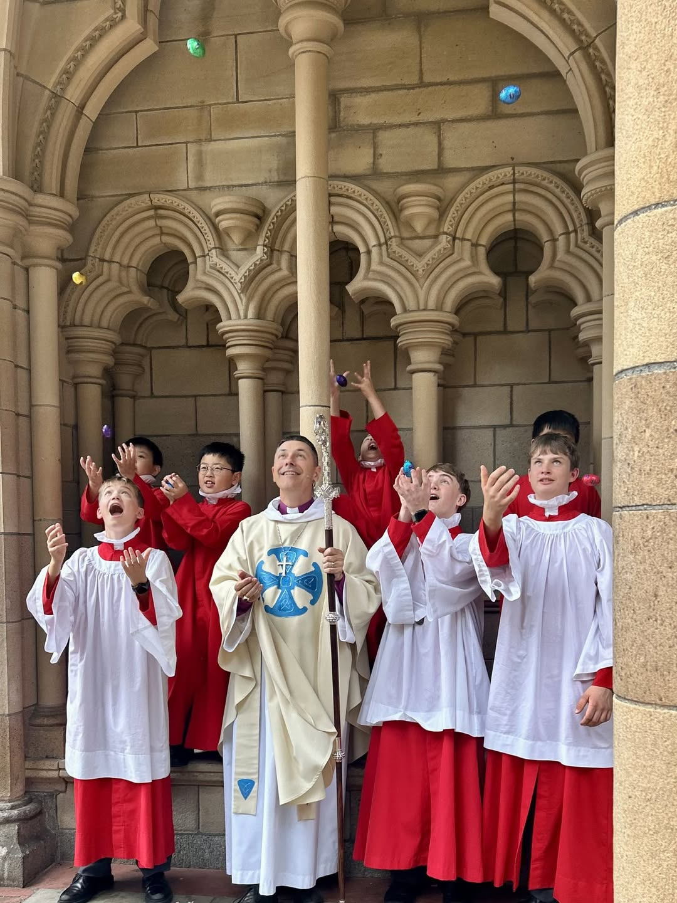
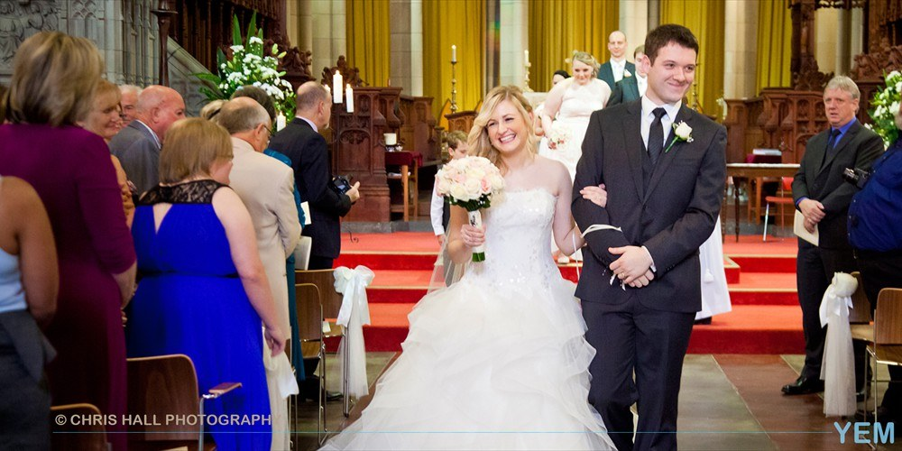

ST JOHN’S CATHEDRAL · BRISBANE
A place for faith.
A space for everyone.
Join us for worship. Discover something beautiful.
Find a community where you belong.

Making Hope
With O’neil Van Horn
Listen to the conversation ↗COME AS YOU ARE
Worship with us.
Everyone is welcome. Join us in the Cathedral or worship online.
Sunday Services
Regular weekly worship · Brisbane timeHoly Eucharist
Spoken worshipWith hymns
Discover the Eucharist ↗Choral Eucharist
Sung worshipChildren’s Ministry
Worship for all ages ↗Holy Eucharist
Spoken worshipHoly Spirit Chapel
Discover the Eucharist ↗Choral Evensong
Choral prayerAt the day’s close
Experience Evensong ↗A DAILY RHYTHM OF PRAYER
Today at the Cathedral.
Australian Anglican daily prayer ↗Seasons, principal feasts and selected commemorations. Local observances may differ.Times shown in Brisbane time (AEST). Regular timetable; festival Services and local observances may vary. Please check the full schedule for special dates.

FAITH, SHARED TOGETHER
A Cathedral
full of life.
Voices raised in song. A moment of prayer. Familiar faces and first-time visitors. Discover the people and traditions at the heart of St John’s.
Find your place in our community ↗FIND YOUR WAY
Your Cathedral.
Where will you begin?
A first visit, a familiar service, a new conversation.
There is more than one way to feel at home here.

Step inside.
Opening hours, getting here, accessibility and guided tours.
Plan your visit ↗
Listen. Be moved.
Meet our choirs and discover music in worship, concerts and recitals.
Explore Cathedral music ↗
Be part of it.
See what’s happening this week and find your next Cathedral experience.
View current events ↗
Bring your questions.
Explore faith, reflection, meditation and conversations that matter.
Explore faith & spirituality ↗
Find your people.
Connect through Cathedral life, fellowship, families and volunteering.
Meet our community ↗
Put faith into action.
Discover our outreach and advocacy, and find ways to get involved.
Discover our work ↗
YOUR FIRST VISIT
Come in.
Make yourself
at home.
You don’t need to be part of a congregation to visit. Come for the architecture, the stillness, or simply to see what’s inside.
- Find us
- 373 Ann Street, Brisbane
- Visitor hours
- 9:30 AM–4:30 PM daily
Access may change during services and special events.
Everything you need for your visit ↗A LIVING CATHEDRAL
Rooted in faith.
Open to the world.
A place to worship, wonder and connect.
St John’s brings Anglican tradition into conversation with the questions of our time. We welcome open minds, encourage spiritual discovery and seek to put our beliefs into action.
Get to know St John’s ↗HERE FOR LIFE’S MOMENTS
Celebrate. Remember.
Find support.

KEEP THE DOORS OPEN
Help your Cathedral thrive.
Support its worship, music, heritage and community life.